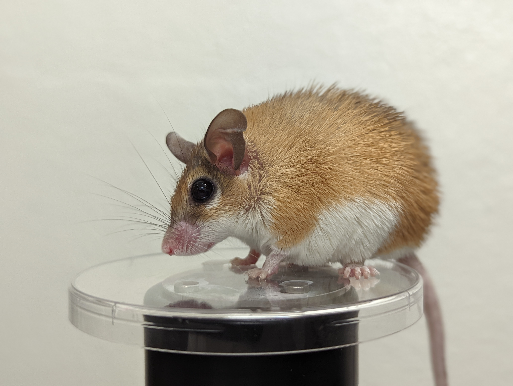

In the future, organs will repair themselves perfectly. We are working toward that future.

Latest news
All news- February 2026High School Researcher Selected for Regeneron ISEF 2026
- January 2026Recruiting MS Student for Fall 2026
- December 2025Lab Awarded internal grants; PrePI and Mentor Protege
Featured paper
Spiny mice regenerate whisker pad skin with follicles, muscles, and targeted innervation.
npj Regenerative Medicine, 2025
Read the paperJoin us
Curious? Come do science with us.
Graduate and postdoc positions available. Undergrads positions available on a case by case basis.
Open positions